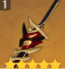
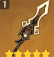
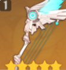
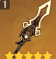
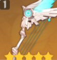
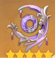
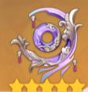

The weapon page will show and explain the details of each weapon that is the best and the F2P friendly weapon for each character in Genshin Impact, whether it be DPS, support, etc. This page will also explain how to use the weapon’s passive properly to further increase the damage dealing capability of the team.
- Geo 
- Electro
- Hydro

 

The weapon page will show and explain the details of each weapon that is the best and the F2P friendly weapon for each character in Genshin Impact, whether it be DPS, support, etc. This page will also explain how to use the weapon’s passive properly to further increase the damage dealing capability of the team.


The weapon page will show and explain the details of each weapon that is the best and the F2P friendly weapon for each character in Genshin Impact, whether it be DPS, support, etc. This page will also explain how to use the weapon’s passive properly to further increase the damage dealing capability of the team.
 

The weapon page will show and explain the details of each weapon that is the best and the F2P friendly weapon for each character in Genshin Impact, whether it be DPS, support, etc. This page will also explain how to use the weapon’s passive properly to further increase the damage dealing capability of the team.